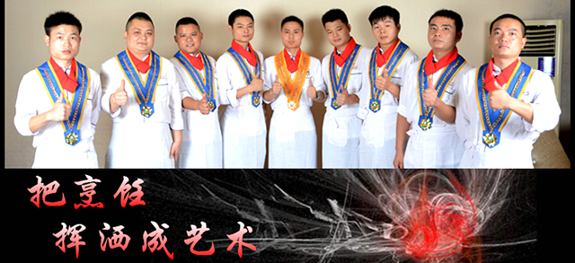

-
企业简介
湘阁餐饮管理公司成立于2005年，是一家以主营特色湘菜的全国餐饮连锁机构。本公司旗下拥有湘阁餐饮、创煌实业投资、悦享娱乐、飚火节能环保等多个品牌项目。旗下拥有近500人的专业服务团队，在东莞、长沙多地均有分店。
-
企业荣誉
邓伟男简介】在董事长邓伟男先生的带领下，湘阁多次获得“广东省湘菜协会委员会会长单位”、“广东湘菜优秀企业”、东莞市首家透明厨房连锁机构与广东省“社会餐饮透明化”倡导者等多项荣誉。湘阁人以“弘扬湖湘文化、打造湘菜时代”为宏伟的企业愿景、胸怀“社会餐饮透明化”的神圣使命感，时刻不忘“顾客至上、成就家人、感恩社会”的社会价值观，为湘菜的传承和发展尽己所能，默默奉献着湘阁人的热血与青春！
-
企业实力
注重食品安全，保障大众健康；奉献优质产品，构建和谐社会！ 为了让广大消费者品尝到健康放心的美食，湘阁人勇于挑战自我，在东莞市首创开放式透明厨房，您在就餐时可全程观看到菜品的操作流程，湘阁人用勤劳的双手，为您打造真正的放心厨房。 在湘阁总部的加工厨房，您也可以看到家人们忙碌额身影：辣椒自己剁、猪油自家酿、腊味亲手熏！湘阁直接对接第一手渠道供应商，杜绝了中间商赚差价，将实惠直接反馈给客户。让消费者体会到真正实惠的同时，也再次保证了产品的安全和新鲜度。调料方面，统一采购国内一线知名品牌，并且郑重做出五大承诺——“拒绝地沟油、拒绝色素、拒绝添加剂、拒绝不卫生、拒绝不新鲜”，湘阁人随时以过硬的自身品质，接受您的检阅！